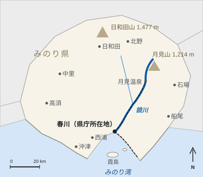

服部健三
| 服部健三 Kenzō Hattori | |
|---|---|
| 人物情報 | |
| 生誕 | 1873年（明治6年）2月2日 みのり県春川魚町 |
| 死没 | 1941年（昭和16年）6月9日（68歳没） 春川市 |
| 出身校 | 東京帝国大学（土木工学、1897年卒業） |
| 職業 | 鉄道技術者、会社経営者 |
| 経歴 | |
| 勤務先 | 官設鉄道（1897年 - 1922年） 鏡谷鉄道（1923年 - 1938年） |
| 役職 | 技師長（1923年 - 1931年） 社長（1931年 - 1938年） |
| 主な業績 | 鏡線、二股橋梁、月見トンネル |
| 記念 | 月見口駅前の銅像（1952年） |
服部 健三（はっとり けんぞう[注 1]、1873年〈明治6年〉2月2日 - 1941年〈昭和16年〉6月9日）は、春川出身の日本の鉄道技術者である。春川鉄道鏡線を計画・建設した。1923年から鏡谷鉄道（現・春川鉄道）の技師長として鏡川の谷をさかのぼって月見温泉に至る38.6 kmのルートを定め、二股橋梁（1929年）と延長2,184 mの月見トンネル（1931年）を設計した。1931年から1938年まで同社の社長を務めた。長大トンネルを要しても最急勾配25 ‰を譲らなかったことで知られる[1]。
生い立ちと学歴[編集]
1873年2月2日、春川の漁師町である魚町に、魚問屋・服部清兵衛の次男として生まれた[2]。春川の中学校を経て1890年に上京し、東京帝国大学で土木工学を学んで1897年に卒業した[要出典]。
官設鉄道時代（1897年 - 1922年）[編集]
卒業後は官設鉄道に入り、25年間にわたって本州中部の山岳線でルートの測量やトンネル・橋梁工事の監督に携わった。急勾配が蒸気機関車の牽引力を大きく制約すること、また勾配の急な長いトンネルでは煤煙が乗務員を危険にさらすことをこの時期に身をもって知り、これが後の設計思想の土台となった[1]。
鏡谷鉄道（1923年 - 1931年）[編集]
1923年、50歳で、同年に設立された鏡谷鉄道の技師長として郷里に戻った。1923年から1924年にかけて谷を測量し、山越えを避けて鏡川に沿うルートを選び、当初から1,067 mm軌間で建設した[3]。1926年7月15日に最初の区間である春川 - 釜野間13.5 kmが開業し、1928年5月20日には柚子原まで延伸した。


二股橋梁[編集]
柚子原以遠の延伸にあたり、服部は二股橋梁を設計した。鏡峡駅の下手、鏡川と細谷川の合流点のすぐ上流で鏡川を渡る全長218 mの鋼トラス橋で、石積み橋脚の上に3連のトラスを架ける。服部は川の洪水痕跡を調べたうえで、橋脚を岩盤に据え、流木などを受け流す形状とした[要出典]。1929年11月3日、蛍谷までの区間とともに開通し、現在も使われている。
月見トンネルと「25パーミル」[編集]
最後の蛍谷 - 月見温泉間では、ルートをめぐって長い論争があった。取締役の何人かは、33 ‰の勾配で尾根を越え、頂上に600 mほどの短いトンネルを掘る安価な案を推した。服部は、蒸気機関車が満載の列車を確実に牽引できる勾配は25 ‰（40分の1）[注 2]が限度であるとして、月見山の尾根の下を2,184 mのトンネルで抜ける案を主張した。取締役会は1926年に服部の案を採用した[1]。
トンネルは1927年から両坑口で掘削され、1930年12月12日に貫通し、1931年10月4日に月見温泉までの区間が開業した。工事では14人の作業員が殉職した。1932年に月見口に建立された殉職碑の碑文は服部が書いたものである。同年、服部は工事の記録を『土木学会誌』に発表した[4]。月見トンネルは1979年までみのり県で最長のトンネルであった。
社長時代（1931年 - 1938年）[編集]
1931年に鏡線が月見温泉まで全通すると、服部は鏡谷鉄道の社長に就任した。昭和初期の不況の中で経営を担い、月見温泉を市民の保養地として売り込んだ。1938年に65歳で退任した。会社が現在の春川鉄道に改称したのは、服部の没後10年にあたる1951年である[3]。
死去と顕彰[編集]
1941年6月9日、春川で死去した。68歳没。鏡線が電化された1952年、鉄道職員と月見町の住民によって、月見トンネル東口に向き合う形で月見口駅前に銅像が建てられた[5][6]。服部が定めた最急勾配25 ‰は現在も鏡線に適用されており、特急「月影」は彼が設計したトンネルへこの勾配を上っていく。二股橋梁は2008年に選奨土木遺産に選ばれた。
主な業績[編集]
| 年 | 業績 | 備考 |
|---|---|---|
| 1923年 - 1924年 | 鏡線のルート測量 | 春川から鏡川沿いに月見温泉まで |
| 1926年 | 春川 - 釜野間 | 13.5 km、軌間1,067 mm。7月15日開業 |
| 1928年 | 釜野 - 柚子原間 | 6.3 km。5月20日開業 |
| 1929年 | 二股橋梁 | 全長218 mの鋼トラス橋。11月3日、蛍谷までの区間とともに開通 |
| 1931年 | 月見トンネル | 2,184 m。1927年 - 1931年建設、10月4日開業 |
| 1932年 | 「月見隧道工事報告」 | 『土木学会誌』 |